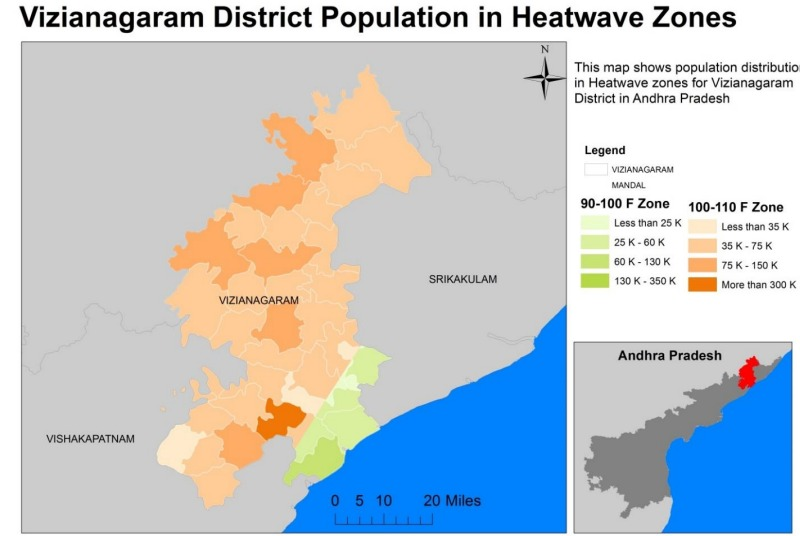

Vijayanagaram District Disaster Management

Vizianagaram District, one of the nine coastal districts of Andhra Pradesh, is a regular victim of multiple disasters and this district was badly affected by all major natural disasters time to time since independent era. Hazards can be single, sequential or combined in their origin and effects. For instance, it could be a cyclone followed by floods. Sometimes natural hazards may get augmented by human activities. For instance, natural coastal erosion by wave action may increase due to cutting down of mangroves. The risk from hazards is characterized by the frequency of occurrence and severity of the hazard. For example tsunamis are rare events with moderate to severe consequences. Mild flooding may occur frequently, while severe flooding may be an infrequent event. Coastal erosion may be a chronic event with mild consequences or, coupled with other hazards, may result in severe impacts on the shoreline. Infrequent events with limited predictability pose the greatest risk of disaster and the longest time needed for disaster recovery. Frequent or ongoing hazards such as resource or environmental degradation processes can be monitored to reduce risk.
The prominent natural and manmade hazards in the district are as below:
Cyclones
Floods
Heat Waves
Earthquakes
Earthquake in Vijayanagaram District:

Most of India is prone to damaging earthquakes. According to seismic zoning of India,
the country is divided into five seismic zones based on severity. Andhra Pradesh lies in
three zones – Zone I, Zone II and Zone III. All three zones are relatively low risk zones. Zone
IV and Zone V are considered high risk zones.
Extended effects of Sumatra-Andaman earthquake, Mw9.1 was felt in Andhra Pradesh
on December 26, 2004 at 03.298 N, 95.778 E, D = 010.0 kms, OT = 00:58:50 UTC. A "very
great" earthquake struck the North Indian Ocean & the Bay of Bengal at 00:58 UTC on 26th
December 2004. 2,30,210 people were estimated to have been killed in the Indian Ocean�wide tsunami generated by this earthquake, including at least 105
Floods in Vijayanagaram District:

Floods by nature depend on several factors; one being incessant rains, cyclonic rains
in a short period of time crippling natural drainage. However, other factors such as nature of
the collecting basin, nature of the streams, type of soil, natural and man-made vegetation,
amount of rainfall etc. determine type and extent of floods. The inundation patterns and
potential areas that would be inundated due to river outflow and heavy rain is fairly certain;
and the concerned departments usually have the information. However, inundation due to
storm surges and cyclonic landfall is unpredictable and depends on the wind direction.
Floods in the district caused widespread loss to human lives, livestock, damaged
homes and caused crop destruction over the decades. Infrastructure damage due floods
is well recorded. As well as damages to roads, irrigation tanks breached.
Cyclones in Vijayanagaram District:

cyclones occur frequently on both the coasts i.e. The West
Coast (Arabian Sea) and East Coast (Bay of Bengal). But the East Coast is considered
to be one of the most cyclone prone areas of the world. An analysis of the
frequencies of cyclones on the East and West coasts of India during 1891- 1990 shows
that nearly 262 cyclones occurred (92 severe) in a50 km wide strip on the East Coast,
Less severe cyclonic activity on West Coast amounting to 33 cyclones in the same
period.
Heat Waves in Vijayanagaram District:

Heat wave is a period of abnormally high temperatures, more than the normal maximum
temperature that occurs during the pre-monsoon (April to June) summer season. Heat -waves
typically occur between March to June, and in some rare cases even extend till July. Heat waves
are more frequent over the Indo-Gangetic plains of India. On an average, 5-6 heat wave events
48
occur every year over the northern parts of the country. The most notable amongst the recent
ones are Hyderabad (Andhra Pradesh) 46 °C.
Droughts in Vijayanagaram District:

While drought is an insidious hazard of nature, it originates from a deficiency of
precipitation that persists long enough to produce a serious hydrologic imbalance. Drought should be
considered relative to some long-term average condition of balance between precipitation and evapo�transpiration (i.e., evaporation and transpiration) in a particular area. Drought differs in three essential
characteristics: intensity, duration and spatial coverage. Because of these reasons, although it adversely
affects people dependent on subsistence agriculture, drought ought not be classified along with other
hazards that are short-duration and sudden in nature.
Several times Vizianagaram District is declared as drought affected, due to scarceness in rainfall.
Recently in the year 2013, 5 Mandals & 2015, 3 Mandals in Vizianagaram District are declared as
Drought affected Mandals.